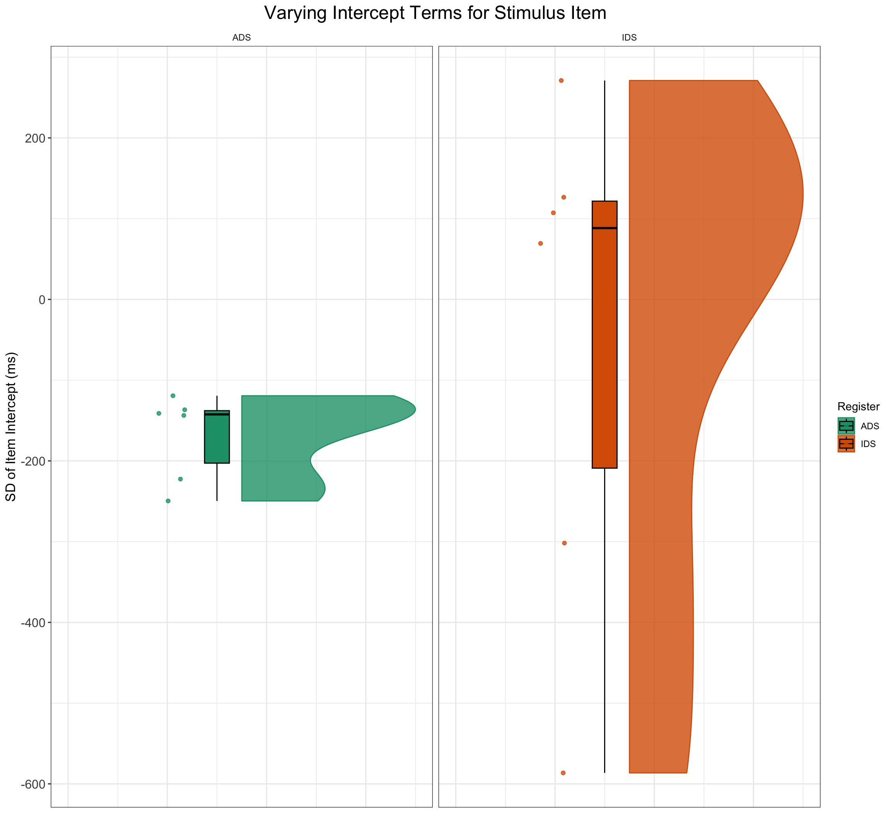
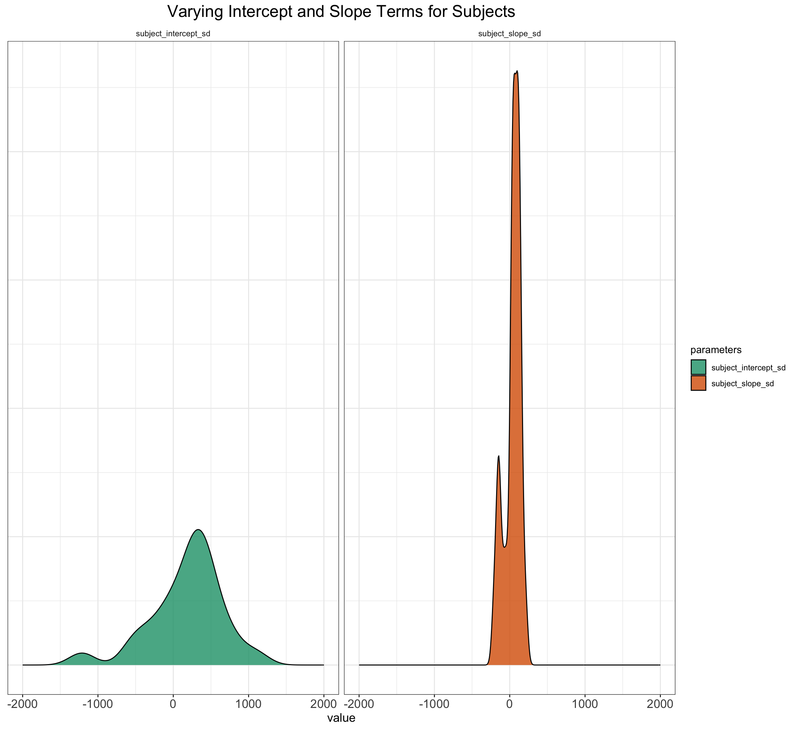
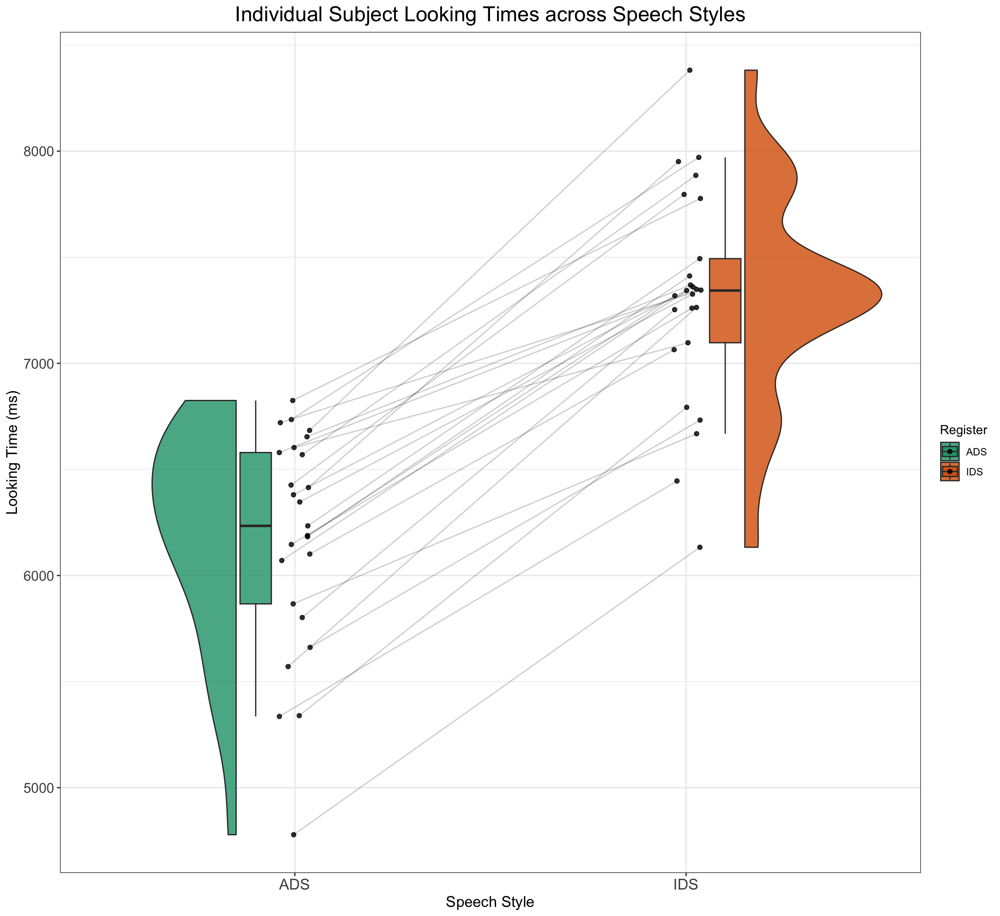
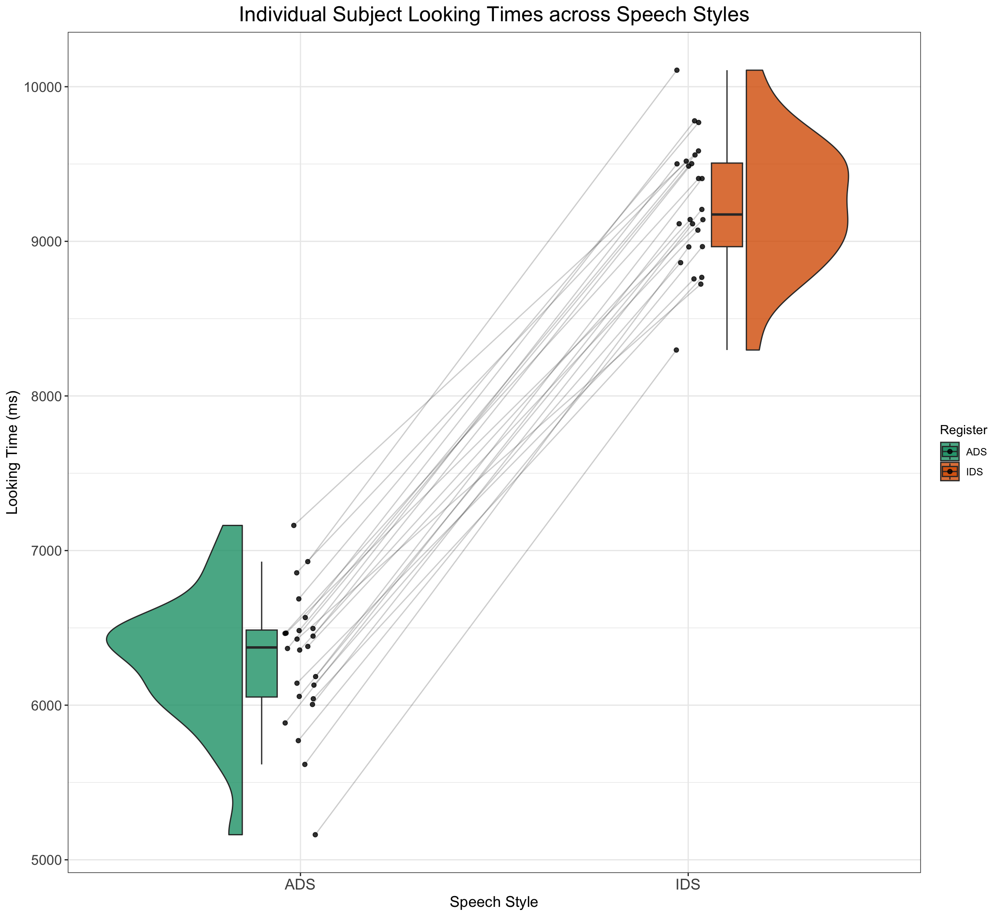
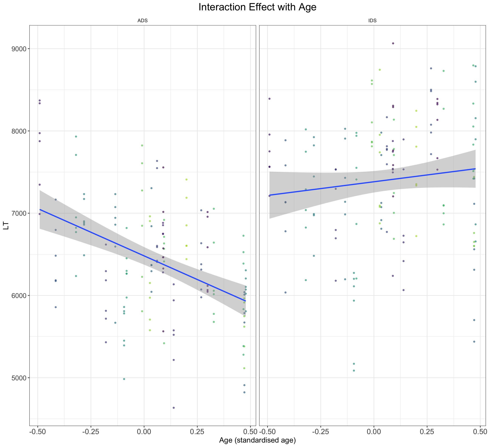

# set number of subjects and items
n_subj <- 25 # number of infant participants
n_ADS <- 6 # number of ADS stimuli
n_IDS <- 6 # number of IDS stimuliPart I, Data Simulation
1 A Description of the Example and Aim of the Simulation
In this first task, we will deal with a dependent variable that should be familiar to many researchers within developmental science: infant looking times. In our hypothetical study (modelled on ManyBabies1), infant participants are exposed to recordings of adult-directed speech (ADS) and infant-directed speech (IDS), and infants’ looking times to an unrelated visual stimulus is recorded as the primary dependent variable. The key question is whether there are any behavioural differences according to the set of stimuli (i.e., ADS vs. IDS) within each participant. To gain familiarity with the simulation process and to build up the structure for a simulation function that will help us when performing the power analysis in Part II, we will simulate data on the scale of looking times (i.e., 0-20,000ms). In the next section, we will extend this process to simulate effect size data.
2 Determining the Experimental Parameters
Before we can start to simulate data, we need to be very clear about the study design. This clarity is important because we need to explicitly define the parameters that we assume govern the process of data generation. If we are designing a similar study to that of ManyBabies1, then we are dealing with a within-subjects, between-items study; that is, each and every subject receives both ADS and IDS stimuli (within-subject), but each stimulus is either ADS or IDS (between-items).
Because infants are not the most patient of participants, perhaps a realistic study design would allow researchers to expose infants to 6 recordings of ADS and 6 recordings of IDS. And let’s say that a realistic sample size in our imaginary laboratory would be around 25 participants. This would imply a total of 300 observations in this study (i.e., 6 + 6 recording stimuli for each of the 25 children). Let’s set start by setting these experimental parameters.
3 Data Generating Parameters
Now that we have an overview of the experimental design, we can start to consider a reasonable underlying statistical model. In the following sections, we will gradually build up the parameters for a mixed-effects statistical model of the following type, as described in the lecture:
\[ Looking Time = \beta^{ADS} + VaryingIntercept^{subj} + VaryingIntercept^{item} + (\beta^{IDS} + VaryingSlope^{subj}) \cdot SpeechStyle + \varepsilon \] According to this formula, the process of data generation means that our dependent variable of looking time is composed of a linear combination of the following fixed parameters: * the average ADS intercept capturing the mean baseline tendency to attend to ADS, ^{ADS} * the average influence of IDS on this baseline attention, ^{IDS}
There are also three varying effects: * a by-subject random intercept, VaryingIntercept^{subj} * a by-item random intercept, VaryingIntercept^{item} * a by-subject random slope, VaryingSlope^{subj}
And lastly: * a trial-level residual error
This formula paves a clear way forward for our process of data simulation. In the next section, we will build up a statistical model step by step, defining variables in the code as we go along that reflect our choices for the different parameters.
4 Choosing Values for Fixed Effect Parameters
Let’s start by setting the fixed-effect parameters of SpeechStyle (β₀ + β₁*SpeechStyle). How should we set these parameters? A good place to start would be to be guided by what we know about looking time distributions in infant experiments. For example, we could imagine average infant looking times to be around 6 seconds (i.e., 6000ms) and for IDS stimuli to increase infant looking time by 1 second (i.e., 1000ms). Let’s go ahead and set these values as parameters in our simulation.
# set fixed effect parameters
mean_intercept <- 6000 # intercept; i.e., the grand mean, β₀
mean_slope <- 1000 # slope; i.e, effect of IDS, β₁5 Choosing Values for Varying Intercept Parameters
When we’re modelling data from experiments involving individuals (like infants in this case), it’s essential to account for the fact that each individual may have unique baseline reactions to the speech stimuli. Similarly, the effect of the stimuli on infant looking times might vary across different instances of the stimulus.
To address this, we introduce random intercept values for subjects and items by code the standard deviation of the random intercepts and sampling from a normal distribution. This reflects the range of differences we might observe among subjects’ reactions and the effects of different stimulus items.
# set random effect parameters
subject_varyingintercept <- 500 # by-subject random intercept sd
item_varyingintercept <- 250 # by-item random intercept sd6 Choosing Value for Varying Slope Parameter
We also need to acknowledge that the magnitude of the effect of IDS stimuli may vary across individual infants. Some infants might be more responsive to IDS stimuli than others, leading to variation in the differences in looking times across speech styles. We therefore introduce a slope parameter that varies by subject. When we introduce random slopes to a model, we need to consider potential correlations between these varying slopes and the varying intercepts. This is because if there is a correlation between the way individuals (infants, in this case) respond to the IDS stimuli (reflected in the varying slopes) and their baseline behaviors (reflected in the varying intercepts), it can affect our model’s predictions. For instance, if infants who naturally have longer attention spans (reflected in higher random intercepts) also tend to show stronger responses to IDS stimuli (reflected in steeper random slopes), ignoring this correlation might lead to biased estimates. Including a correlation matrix allows us to explicitly account for these potential correlations, ensuring that our model accurately captures the relationships between different sources of variability in the data and produces more reliable results. Hence, in the following code, we include a correlation matrix, specifying a weak correlation between the varying intercepts and varying slopes of infant participants. Lastly, we incorporate a residual error term to account for any unexplained sources of variability in the model.
# set more random effect and error parameters
subject_varyingslope <- 100 # by-subject random slope sd
rho <- 0.2 # correlation between intercept and slope
sigma <- 500 # residual (error) sd7 Simulate Stimulus Items
Now it’s time to create a dataset that lists, for each stimulus item, the speech style it is in and its varying properties on infants’ looking times. To set the parameter for varying item intercept, we are going to specify the standard deviation that we expect items to exhibit in the parameter, item_varyingintercept, in the below code. That is, we sample values from a normal distribution using the rnorm() function, with a meaan of 0 and standard deviation of item_varyingintercept. For the varying item variable, we also need to assign a unique identifer to each of the 16 speech stimuli and designate whether the stimuli are ADS or IDS, with the first 8 being ADS and the next 8 being IDS. We are going to use the faux package to carry this out.
# simulate a sample of items
# total number of items = n_ADS + n_IDS
items <- data.frame(
#item_id = seq_len(n_ADS + n_IDS),
Register = rep(c("IDS", "ADS"), c(n_ADS, n_IDS)),
item_intercept_sd = rnorm(n = n_ADS + n_IDS, mean = 0, sd = item_varyingintercept)
) %>%
mutate(SpeechStyle = recode(Register, "ADS" = 0, "IDS" = 1)) %>%
mutate(item_id = faux::make_id(nrow(.), "I"))To get to better grips with the simulation process, let’s visualise the data and take a look:
glimpse(items)Rows: 12
Columns: 4
$ Register <chr> "IDS", "IDS", "IDS", "IDS", "IDS", "IDS", "ADS", "AD…
$ item_intercept_sd <dbl> -301.76644, 69.35731, 271.11029, -586.42443, 107.281…
$ SpeechStyle <dbl> 1, 1, 1, 1, 1, 1, 0, 0, 0, 0, 0, 0
$ item_id <chr> "I01", "I02", "I03", "I04", "I05", "I06", "I07", "I0…ggplot(items, aes(1, item_intercept_sd, fill = Register, color = Register)) +
geom_rain(alpha = 0.8, boxplot.args = list(color = "black",
outlier.shape = NA)) + ggtitle("Varying Intercept Terms for Stimulus Item") +
ylab("SD of Item Intercept (ms)") + facet_wrap(~Register) +
scale_fill_brewer(palette = "Dark2") + scale_color_brewer(palette = "Dark2") +
plot_theme + theme(axis.title.x = element_blank(), axis.text.x = element_blank(),
axis.ticks.x = element_blank())
8 Simulate the sampling of subjects
The process of simulating varying intercepts varying slopes data for subjects is slightly more complex than that of items. This process is slightly more complex than before because we cannot simply sample the intercept values independently from the slope values using rnorm(). Instead, we need to sample pairs of values for each subject from a bivariate normal distribution. We will use the rnorm_multi() function from the faux package (DeBruine 2020) to carry this out. This function allows us to specify the means, and standard deviations (sd) for each variable, along with the correlations (r), which in this case will be a single value applied to all pairs.
# simulate a sample of subjects
# sample from a multivariate random distribution
subjects <- faux::rnorm_multi(
n = n_subj,
mu = 0, # means for random effects are always 0
sd = c(subject_varyingintercept, subject_varyingslope), # note that we set the SDs further up in the code when specifying varying intercepts and sloeps.
r = rho, # set correlation, see ?faux::rnorm_multi
varnames = c("subject_intercept_sd", "subject_slope_sd")
) %>%
mutate(subj_id = faux::make_id(nrow(.), "S")) # add subject ids that correspond to the number of rows simulated.Again, let’s visualise this process, so that we are sure what the code is doing.
glimpse(subjects)Rows: 25
Columns: 3
$ subject_intercept_sd <dbl> 382.658246, -33.425681, -481.626658, 61.038220, 2…
$ subject_slope_sd <dbl> 147.31082, 27.44542, 25.61690, -139.48689, 115.15…
$ subj_id <chr> "S01", "S02", "S03", "S04", "S05", "S06", "S07", …subjects %>%
pivot_longer(cols = starts_with("subject"), names_to = "parameters",
values_to = "value") %>%
ggplot() + geom_density(aes(value, fill = parameters), alpha = 0.8) +
xlim(c(-4 * subject_varyingintercept, 4 * subject_varyingintercept)) +
facet_wrap(~parameters) + ggtitle("Varying Intercept and Slope Terms for Subjects") +
plot_theme + scale_fill_brewer(palette = "Dark2") + theme(axis.title.y = element_blank(),
axis.text.y = element_blank(), axis.ticks.y = element_blank())
9 Time to Put It All Together
Because all subjects respond to all stimulus items, we can create a dataset with every possible combination of the rows in the simulated subject and item datasets. For this we use the tidyverse function crossing(). To introduce inherent fluctuations in trial-by-trial performance, we also incorporate random error into each trial at this stage, based on our sigma value (specified above). The output of this approach means that our dataset captures the full range of subject-item interactions while accounting for unpredictable variations in individual performance across trials.
# cross subject and item IDs; add an error term
ParameterValues <- crossing(subjects, items) %>%
mutate(e_si = rnorm(nrow(.), mean = 0, sd = sigma))
glimpse(ParameterValues)Rows: 300
Columns: 8
$ subject_intercept_sd <dbl> -1211.9231, -1211.9231, -1211.9231, -1211.9231, -…
$ subject_slope_sd <dbl> 47.01883, 47.01883, 47.01883, 47.01883, 47.01883,…
$ subj_id <chr> "S08", "S08", "S08", "S08", "S08", "S08", "S08", …
$ Register <chr> "ADS", "ADS", "ADS", "ADS", "ADS", "ADS", "IDS", …
$ item_intercept_sd <dbl> -249.59661, -222.50946, -143.68499, -141.11300, -…
$ SpeechStyle <dbl> 0, 0, 0, 0, 0, 0, 1, 1, 1, 1, 1, 1, 0, 0, 0, 0, 0…
$ item_id <chr> "I12", "I10", "I07", "I09", "I08", "I11", "I04", …
$ e_si <dbl> -17.380195, -334.816790, -3.802378, 888.542224, -…Now we have specified the parameters in ParameterValues, we are ready to add up everything together to create the response variable (i.e., infant looking times in milliseconds). To be more specific, we calculate the response variable, looking time, by adding together the variables.
# calculate the response variable
SimulatedLT <- ParameterValues %>%
mutate(LT = mean_intercept + subject_intercept_sd + item_intercept_sd + (mean_slope + subject_slope_sd) * SpeechStyle + e_si) %>% #sum together overall intercept, varying subject and item intercepts, varying subject slopes, and random error.
mutate(LT = LT + rexp(nrow(.), rate = 0.01)) %>% #add a long tail to the distribution to simulate exgaussian distribution of looking times
dplyr::select(subj_id, item_id, Register, SpeechStyle, LT)Let’s have a look at what the data we have generated looks like:
# Plot of how overall looking time distributions differ
# across ADS and IDS
SimulatedLT %>%
ggplot() + geom_density(aes(LT, fill = Register), alpha = 0.8) +
xlim(c(2400, 18000)) + ggtitle("Varying Intercept and Slope Terms for Subjects") +
plot_theme + scale_fill_brewer(palette = "Dark2") + theme(axis.title.y = element_blank(),
axis.text.y = element_blank(), axis.ticks.y = element_blank())
# Plot of how looking times of indvidual subjects differ
# across the two speech style
SimulatedLT %>%
group_by(subj_id, Register) %>%
dplyr::summarise(medLT = mean(LT), .groups = "drop") %>%
ggplot(aes(x = Register, y = medLT, fill = Register)) + geom_rain(alpha = 0.8,
rain.side = "f1x1", id.long.var = "subj_id", point.args.pos = list(position = position_jitter(width = 0.04,
height = 0, seed = 42)), line.args.pos = list(position = position_jitter(width = 0.04,
height = 0, seed = 42))) + scale_fill_brewer(palette = "Dark2") +
ggtitle("Individual Subject Looking Times across Speech Styles") +
xlab("Speech Style") + ylab("Looking Time (ms)") + scale_color_manual(values = viridis(n = 27)) +
plot_theme
10 With the Initial Setup Done, Let’s Automatise with a Function!
Now that we’ve simulated a dataset with the necessary properties, suitable for sophisticated linear mixed effects models, we can streamline the process by encapsulating all the preceding code into a custom function. This function will accept the parameters we defined earlier as arguments, with default values set to our chosen parameters.
# set up the custom data simulation function
SimulateLTData <- function(
n_subj = 24, # number of subjects
n_ADS = 6, # number of ingroup stimuli
n_IDS = 6, # number of outgroup stimuli
mean_intercept = 6000, # grand mean
mean_slope = 1000, # effect of category
item_varyingintercept = 250, # by-item random intercept sd
subject_varyingintercept = 500, # by-subject random intercept sd
subject_varyingslope = 100, # by-subject random slope sd
rho = 0.2, # correlation between intercept and slope
sigma = 500) { # residual (standard deviation)
items <- data.frame(
#item_id = seq_len(n_ADS + n_IDS),
Register = rep(c("IDS", "ADS"), c(n_ADS, n_IDS)),
item_intercept_sd = rnorm(n = n_ADS + n_IDS, mean = 0, sd = item_varyingintercept)
) %>%
mutate(SpeechStyle = recode(Register, "ADS" = 0, "IDS" = 1)) %>%
mutate(item_id = faux::make_id(nrow(.), "I"))
# simulate a sample of subjects
# sample from a multivariate random distribution
subjects <- faux::rnorm_multi(
n = n_subj,
mu = 0,
sd = c(subject_varyingintercept, subject_varyingslope),
r = rho,
varnames = c("subject_intercept_sd", "subject_slope_sd")
) %>%
mutate(subj_id = faux::make_id(nrow(.), "S"))
ParameterValues <- crossing(subjects, items) %>%
mutate(e_si = rnorm(nrow(.), mean = 0, sd = sigma))
# calculate the response variable
SimulatedLT <- ParameterValues %>%
mutate(LT = mean_intercept + subject_intercept_sd + item_intercept_sd + (mean_slope + subject_slope_sd) * SpeechStyle + e_si) %>% #sum together overall intercept, varying subject and item intercepts, varying subject slopes, and random error.
mutate(LT = LT + rexp(nrow(.), rate = 0.01)) %>% #add a long tail to the distribution to simulate exgaussian distribution of looking times
dplyr::select(subj_id, item_id, Register, SpeechStyle, LT)
}Having condense all the preceding steps into a single function and returning a dataset with the specified parameters, we are now empowered to effortlessly experiment with different parameters or generate multiple datasets for power analysis purposes.
For example, we can easily generate a dataset with the effect of IDS being 5000ms instead of only 1000ms by specifying the following
SimulatedDataWithIDSslopeOf3000 <- SimulateLTData(mean_slope = 3000)
# Plot of how looking times of indvidual subjects differ
# across the two speech style
SimulatedDataWithIDSslopeOf3000 %>%
group_by(subj_id, Register) %>%
dplyr::summarise(medLT = mean(LT), .groups = "drop") %>%
ggplot(aes(x = Register, y = medLT, fill = Register)) + geom_rain(alpha = 0.8,
rain.side = "f1x1", id.long.var = "subj_id", point.args.pos = list(position = position_jitter(width = 0.04,
height = 0, seed = 42)), line.args.pos = list(position = position_jitter(width = 0.04,
height = 0, seed = 42))) + scale_fill_brewer(palette = "Dark2") +
ggtitle("Individual Subject Looking Times across Speech Styles") +
xlab("Speech Style") + ylab("Looking Time (ms)") + scale_color_manual(values = viridis(n = 27)) +
plot_themeWarning: Duplicated aesthetics after name standardisation: alpha
11 Exercises to Check Understanding
11.1 Exercise I
- How would you adapt the above code to generate a dataset with 500 participants and no effect of SpeechStyle (i.e., distributions similar to the below plot)? Try to get inspiration from the below plot, code up a solution, and only then click on “Show the code” to check how you might approach this.
Show the code
# With our new SimulateLTData() function, the answer here
# is fairly straightforward! We can simply specify that we
# want to simulate 500 subjects and want a mean slope of 0,
# like so: SimulateLTData(n_subj = 500, mean_slope = 0).
LTDataSimulated <- SimulateLTData(n_subj = 500, mean_slope = 0)
LTDataSimulated %>%
group_by(subj_id, Register) %>%
dplyr::summarise(medLT = mean(LT), .groups = "drop") %>%
ggplot(aes(x = Register, y = medLT, fill = Register)) + geom_rain(alpha = 0.8,
rain.side = "f1x1", id.long.var = "subj_id", point.args.pos = list(position = position_jitter(width = 0.04,
height = 0, seed = 42)), line.args.pos = list(position = position_jitter(width = 0.04,
height = 0, seed = 42))) + scale_fill_brewer(palette = "Dark2") +
ggtitle("Looking Time Differences across Speech Styles") +
xlab("Speech Style") + ylab("Looking Time (ms)") + scale_color_manual(values = viridis(n = 27)) +
plot_theme11.2 Exercise II
- We might expect the IDS preference effect to change with infant age, such that older infants display longer looking times to IDS over ADS. How would you add a positive interaction effect of (cross-sectional) age as a predictor to the model (hint: it involves randomly sampling age for each child and adding an effect to the simulation code and model)? Try to think through the problem, get inspiration from the below plot, code up a solution, and only then click on “Show the code” to check how you might approach this.
Show the code
#The question here involves adding infant age as an interaction effect with SpeechStyle. We will approach this question by modifying the code that simulates subject-level data. Here, we will sample an age variable and pretend that we have standardised age so that its values fall between -0.5 and 0.5. We thus randomly sample age to assign one age to each subject. We also need to specify a slope value for the influence of subject age and place it in the start of the function; we will add subject_age = 200. Lastly, we need to change how we sum the values together, so that age has an effect on looking times, but also that the influence of age exerts different effects across the two speech styles.
SimulateLTDataWithAge <- function(
beta_age = 1000, #add effect of age
age_interaction_sd = 150, #add some standard deviation to aage effect
n_subj = 24, # number of subjects
n_ADS = 6, # number of ingroup stimuli
n_IDS = 6, # number of outgroup stimuli
mean_intercept = 6000, # grand mean
mean_slope = 1000, # effect of category
item_varyingintercept = 250, # by-item random intercept sd
subject_varyingintercept = 500, # by-subject random intercept sd
subject_varyingslope = 100, # by-subject random slope sd
rho = 0.2, # correlation between intercept and slope
sigma = 500) { # residual (standard deviation)
items <- data.frame(
#item_id = seq_len(n_ADS + n_IDS),
Register = rep(c("IDS", "ADS"), c(n_ADS, n_IDS)),
item_intercept_sd = rnorm(n = n_ADS + n_IDS, mean = 0, sd = item_varyingintercept)
) %>%
mutate(SpeechStyle = recode(Register, "ADS" = 0, "IDS" = 1)) %>%
mutate(item_id = faux::make_id(nrow(.), "I"))
# simulate a sample of subjects
# sample from a multivariate random distribution
subjects <- faux::rnorm_multi(
n = n_subj,
mu = 0,
sd = c(subject_varyingintercept, subject_varyingslope, age_interaction_sd),
r = rho,
varnames = c("subject_intercept_sd", "subject_slope_sd", "age_slope_sd")
) %>%
mutate(subj_id = faux::make_id(nrow(.), "S")) %>%
mutate(age_subj = runif(n_subj, min = -0.5, max = 0.5))
ParameterValues <- crossing(subjects, items) %>%
mutate(e_si = rnorm(nrow(.), mean = 0, sd = sigma))
# calculate the response variable
SimulatedLT <- ParameterValues %>%
mutate(LT = mean_intercept + subject_intercept_sd + item_intercept_sd + (mean_slope + subject_slope_sd) * SpeechStyle + ((beta_age + age_slope_sd) * age_subj * SpeechStyle) + e_si) %>%
mutate(LT = LT + rexp(nrow(.), rate = 0.01)) %>% #add a long tail to the distribution to simulate exgaussian distribution of looking times
dplyr::select(subj_id, item_id, Register, SpeechStyle, age_subj, LT)
}
DataWithAgeSimulated <- SimulateLTDataWithAge()
DataWithAgeSimulated %>%
ggplot() +
geom_point(aes(y = LT, x = age_subj, color = subj_id), alpha = 0.6, size = 1, show.legend = F) +
geom_smooth(method = "lm", se = TRUE, formula = y ~ x, aes(y = LT, x = age_subj)) +
ggtitle("Interaction Effect with Age") +
xlab("Age (standardised age)") +
facet_wrap(~Register) +
scale_color_manual(values = viridis(n = 27)) +
plot_theme
11.3 Exercise III
- We made the simplifying assumption that each and every stimulus item evokes exactly the same response in participants; however, certain items might elicit stronger or weaker responses depending on individual differences or contextual factors. Including varying slopes for stimulus items may help us capture this variation more accurately (if the model can converge). How could we modify the above code to include varying slopes according stimulus items? Again, try to think through the problem, get inspiration from the below plot, code up a solution, and only then click on “Show the code” to check how you might approach this.
Show the code
SimulateLTData <- function(
item_varyingslope = 100, # by-subject random slope sd
n_subj = 24, # number of subjects
n_ADS = 6, # number of ingroup stimuli
n_IDS = 6, # number of outgroup stimuli
mean_intercept = 6000, # grand mean
mean_slope = 1000, # effect of category
item_varyingintercept = 250, # by-item random intercept sd
subject_varyingintercept = 500, # by-subject random intercept sd
subject_varyingslope = 100, # by-subject random slope sd
rho = 0.2, # correlation between intercept and slope
sigma = 500) { # residual (standard deviation)
items <- data.frame(
#item_id = seq_len(n_ADS + n_IDS),
Register = rep(c("IDS", "ADS"), c(n_ADS, n_IDS)),
faux::rnorm_multi(
n = n_ADS + n_IDS,
mu = 0, # means for random effects are always 0
sd = c(item_varyingintercept, item_varyingslope),
r = rho,
varnames = c("item_varyingintercept", "item_slope_sd"))) %>%
mutate(item_id = faux::make_id(n_ADS + n_IDS, "I")) %>%
mutate(SpeechStyle = recode(Register, "ADS" = 0, "IDS" = 1))
# simulate a sample of subjects
# sample from a multivariate random distribution
subjects <- faux::rnorm_multi(
n = n_subj,
mu = 0,
sd = c(subject_varyingintercept, subject_varyingslope),
r = rho,
varnames = c("subject_intercept_sd", "subject_slope_sd")
) %>%
mutate(subj_id = faux::make_id(nrow(.), "S"))
ParameterValues <- crossing(subjects, items) %>%
mutate(e_si = rnorm(nrow(.), mean = 0, sd = sigma))
# calculate the response variable
SimulatedLT <- ParameterValues %>%
mutate(LT = mean_intercept + subject_intercept_sd + item_varyingintercept + (mean_slope + subject_slope_sd + item_slope_sd) * SpeechStyle + e_si) %>% #sum together overall intercept, varying subject and item intercepts, varying subject slopes, and random error.
mutate(LT = LT + rexp(nrow(.), rate = 0.01)) %>% #add a long tail to the distribution to simulate exgaussian distribution of looking times
dplyr::select(subj_id, item_id, Register, SpeechStyle, LT)
}
DataWithAgeSimulated <- SimulateLTData()
LTDataSimulated %>%
group_by(item_id, Register) %>%
dplyr::summarise(medLT = mean(LT), .groups = 'drop') %>%
ggplot(aes(x = Register, y = medLT, fill = Register)) +
geom_rain(alpha = 0.8, rain.side = "f1x1", id.long.var = "item_id", point.args.pos = list(position = position_jitter(width = 0.04, height = 0, seed = 42)), line.args.pos = list(position = position_jitter(width = 0.04, height = 0, seed = 42))) +
scale_fill_brewer(palette = 'Dark2') +
ggtitle('Looking Time Differences across Speech Styles') +
xlab("Speech Style") +
ylab('Looking Time (ms)') +
scale_color_manual(values = viridis(n = 27)) +
plot_theme`geom_line()`: Each group consists of only one observation.
ℹ Do you need to adjust the group aesthetic?
Show the code
# set up the custom data simulation function
SimulateLTDataWithAge <- function(
n_subj = 24, # number of subjects
n_ADS = 8, # number of ingroup stimuli
n_IDS = 8, # number of outgroup stimuli
beta_0 = 7000, # grand mean
beta_1 = 2000, # effect of category
beta_as = 5000,
S_as = 200,
item_sd = 200, # by-item random intercept sd
item_slope_sd = 200, # by-item random slope sd
tau_0 = 2000, # by-subject random intercept sd
tau_1 = 1000, # by-subject random slope sd
rho = 0.2, # correlation between intercept and slope
sigma = 500) { # residual (standard deviation)
items <- data.frame(
#item_id = seq_len(n_ADS + n_IDS),
Register = rep(c("IDS", "ADS"), c(n_ADS, n_IDS)),
faux::rnorm_multi(
n = n_ADS + n_IDS,
mu = 0, # means for random effects are always 0
sd = c(item_sd, item_slope_sd),
r = rho,
varnames = c("item_sd", "item_slope_sd"))) %>%
mutate(item_id = faux::make_id(n_ADS + n_IDS, "I")) %>%
mutate(SpeechStyle = recode(Register, "ADS" = 0, "IDS" = 1))
# simulate a sample of subjects
# sample from a multivariate random distribution
subjects <- faux::rnorm_multi(
n = n_subj,
mu = 0, # means for random effects are always 0
sd = c(tau_0, tau_1, S_as), # set SDs
r = rho, # set correlation, see ?faux::rnorm_multi
varnames = c("T_0s", "T_1s", "S_as")
) %>%
mutate(subj_id = faux::make_id(nrow(.), "S")) %>%
mutate(age_subj = runif(n_subj, min = -0.5, max = 0.5))
ParameterValues <- crossing(subjects, items) %>%
mutate(e_si = rnorm(nrow(.), mean = 0, sd = sigma)) %>%
dplyr::select(subj_id, item_id, Register, SpeechStyle, age_subj, S_as, everything())
ParameterValues %>%
mutate(LT = beta_0 + T_0s + item_sd + (beta_1 + T_1s) * SpeechStyle + ((beta_as + S_as) * age_subj * SpeechStyle) + (beta_1 + item_slope_sd) * SpeechStyle + e_si) %>%
mutate(LT = LT + rexp(nrow(.), rate = 0.0003)) %>%
dplyr::select(subj_id, item_id, Register, SpeechStyle, age_subj, LT)
}